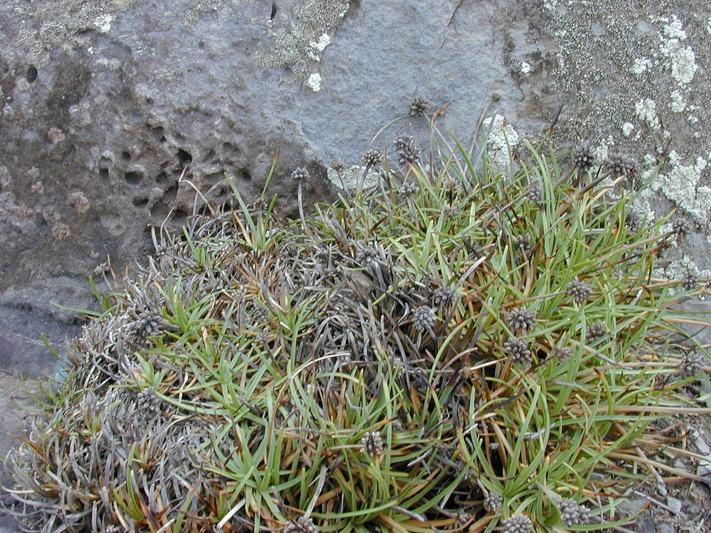
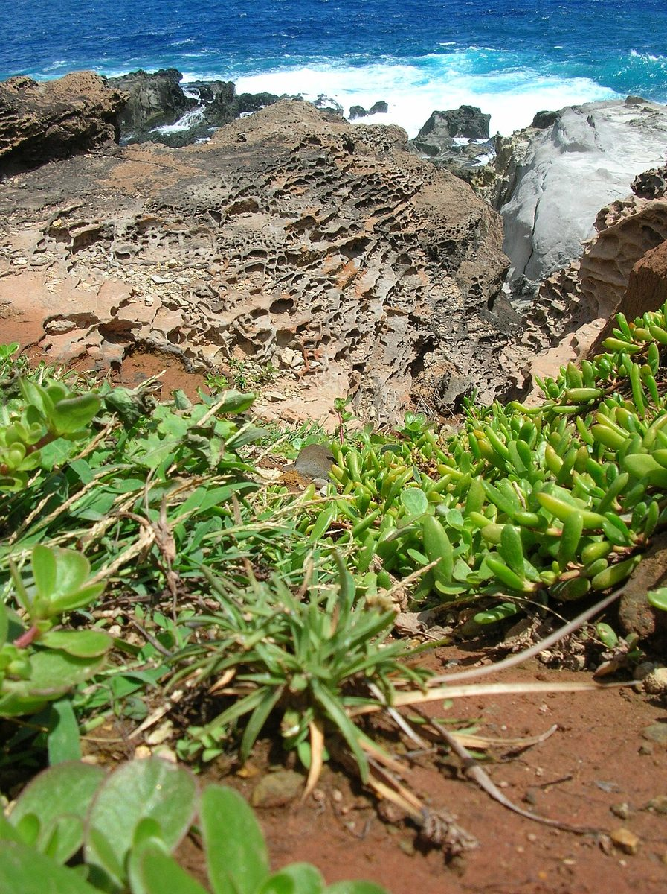

COMMON Beach strand Dune Sea cliff
Fimbristylis cymosa
mauʻu ʻakiʻaki · button sedge, tropical fimbry


Quick facts
| Family | Cyperaceae |
|---|---|
| Scientific name | Fimbristylis cymosa |
| Hawaiian name(s) | mauʻu ʻakiʻaki |
| English name(s) | button sedge, tropical fimbry |
| Status | Indigenous (native, non-endemic) |
| Conservation | — |
| Coastal zones | Beach strand Dune Sea cliff |
| Occurrence | Indigenous tufted sedge of Kauaʻi rocky coasts and upper beaches. Common in exposed calcareous or basaltic pans just above the wrack line at Māhāʻulepū, on the low sea-cliff shelves along Nāpali, and on the upper strand at Kalalau and Nuʻalolo Kai. |
How to identify
- Growth form
- A densely tufted perennial sedge forming small clumps 10–30 cm across, lifting a bristle of wiry stems above short flat leaves.
- Size
- 15–40 cm tall from a basal tuft; tufts 10–30 cm across.
- Leaves
- Basal, narrow (2–4 mm wide), flat to slightly folded, dark green, all much shorter than the flowering stems. Stems triangular in cross- section — pinch one to feel the three ridges (Cyperaceae sign).
- Flowers
- Tiny; the inflorescence is a compact brown umbel-like cluster of small ovoid spikelets held at the top of each wiry stem. The whole cluster is what you see, not individual florets.
- Fruit / seed
- A minute achene enclosed in each spikelet scale.
- Bark / stem
- Slender wiry culms, triangular in cross-section, unbranched, arising directly from the tuft.
- Where it sits on the coast
- Fully exposed hard substrate above high-tide line: coral rubble, wave- scoured basalt, calcareous flats, and dry back-beach edges.
Clinchers (features that lock the ID)
- Dense low tuft of sedge with wiry brown-topped stems above the leaves.
- Compact brown umbel-like inflorescence — a tight cluster of small ovoid spikelets.
- Triangular (three-ridged) stem in cross-section — sedge, not grass.
Look-alikes
- Sporobolus virginicus (ʻakiʻaki grass) — A true grass, not a sedge — stems are round in cross-section (roll smoothly between fingers), leaves are longer relative to plant, and the inflorescence is a narrow one-sided spike rather than a brown button cluster. The two share the "ʻakiʻaki" name in Hawaiian usage, which is exactly why the cross-section test matters.
- Cyperus polystachyos (puʻukaʻa) — Puʻukaʻa is a taller (20–70 cm), coarser tufted sedge with a looser head-like cluster of flat brown-golden spikelets and 3–6 leaf-like bracts that project well above the flower head. Fimbristylis has a tighter, compact brown button-like head without long overtopping bracts and typically grows on drier, harder substrates than the moist sand and seep edges preferred by puʻukaʻa. Both are native Kauaʻi coastal sedges.
Ecology
A pioneer of exposed calcareous and salt-spray habitats. Its dense root system stabilizes rubble and coral pans and it colonizes rapidly on disturbed strand where finer sediments are absent. [16], [21], [22]
Cultural significance
"Mauʻu ʻakiʻaki" is the common Hawaiian name for this and related low coastal sedges. Its role as a bench-forming ground layer is recognized in coastal restoration and cultural landscape work.